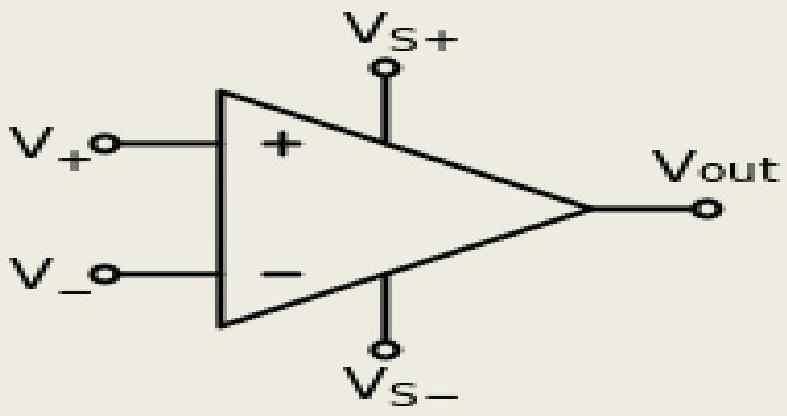
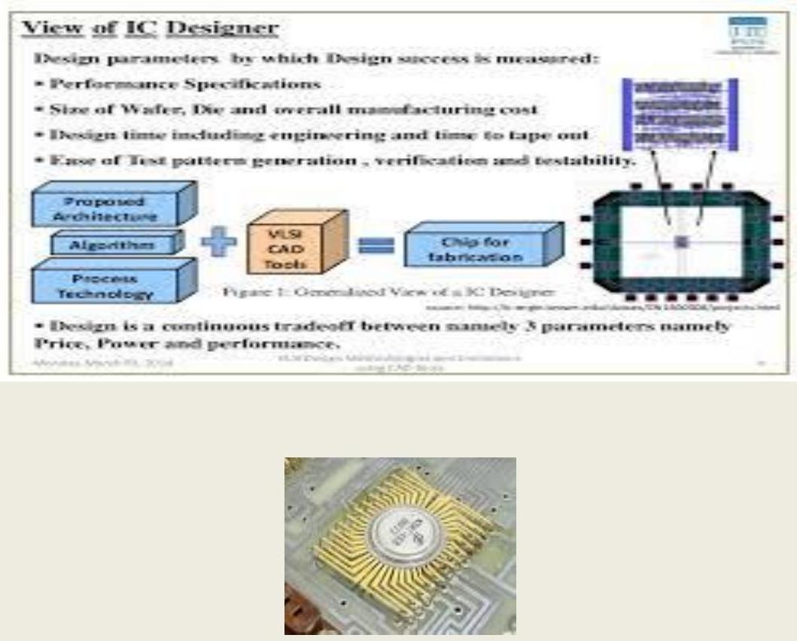

CHAPTER- 3 INTRODUCTION TO OP-AMP.
3.1 Define the term differential amplifier & explain its significance.
Differential amplifier:
Differential amplifier symbol
The inverting and non-inverting inputs are distinguished by "-" and "+" symbols (respectively) placed in the amplifier triangle. $\mathrm{V}_{\mathrm{s}^{+}}$and $\mathrm{V}_{\mathrm{s}^{-}}$are the power supply voltages; they are often omitted from the diagram for simplicity, but of course must be present in the actual circuit.
A differential amplifier is a type of electronic amplifier that amplifies the difference between two voltages but does not amplify the particular voltages.
Differential output
Figure 2: A classic long-tailed pair
With two inputs and two outputs, this forms a differential amplifier stage (Fig. 2). The two bases (or grids or gates) are inputs which are differentially amplified (subtracted and multiplied) by the pair; they can be fed with a differential (balanced) input signal, or one input could be grounded to form a phase splitter circuit. An amplifier with differential output can drive floating load or another stage with differential input.
Single-ended output:
If the differential output is not desired, then only one output can be used (taken from just one of the collectors (or anodes or drains), disregarding the other output without a collector inductor; this configuration is referred to as single-ended output. The gain is half that of the stage with differential output. To avoid sacrificing gain, a differential to single-ended converter can be utilized.
3.2 Draw the four differential amplifier configuration and show the no of Input signal used and the way the Output is measured voltage of each amplifier (no mathematical derivations)
3.3 Block diagram representation of a typical Op-Amp :
Figure .-Block diagram of an operational amplifier.
The input stage is a differential amplifier. The differential amplifier used as an input stage provides differential inputs and a frequency response down to d.c. Special techniques are used to provide the high input impedance necessary for the operational amplifier. The second stage is a high-gain voltage amplifier. This stage may be made from several transistors to provide high gain. A typical operational amplifier could have a voltage gain of 200,000. Most of this gain comes from the voltage amplifier stage. The final stage of the OP AMP is an output amplifier. The output amplifier provides low output impedance. The actual circuit used could be an emitter follower. The output stage should allow the operational amplifier to deliver several mill amperes to a load. Notice that the operational amplifier has a positive power supply ( $+\mathrm{V}_{\mathrm{cc}}$ ) and a negative power supply ( $-\mathrm{V}_{\mathrm{EE}}$ ). This arrangement enables the operational amplifier to produce either a positive or a negative output. The two input terminals are labeled "inverting input" (-) and "non inverting input" (+). The operational amplifier can be used with three different input conditions (modes). With differential inputs (first mode), both input terminals are used and two input signals which are 180 degrees out of phase with each other are used. This produces an output signal that is in phase with the signal on the non inverting input. If the non inverting input is grounded and a signal is applied to the inverting input (second mode), the output signal will be 180 degrees out of phase with the input signal (and one-half the amplitude of the first mode output). If the inverting input is grounded and a signal is applied to the non inverting input (third mode), the output signal will be in phase with the input signal (and one-half the amplitude of the first mode output.
3.4 Analyse a typical Op-Amp equivalent circuits and draw the schematic symbol.
An operational amplifier (opamp) is a DC-coupled high-gain electronic voltage amplifier with a differential input and, usually, a single-ended output. In this configuration, an op-amp produces an output potential (relative to circuit ground) that is typically hundreds of thousands of times larger than the potential difference between its input terminals.
Circuit diagram symbol for an op-amp. Pins are labeled as listed above.
3.5 Discuss the types of integrated circuits manufacturer's designations of ICs, Package types, pin identification and temperature and ordering information.
IC design can be divided into the broad categories of digital and analog IC design. Digital IC design is to produce components such as microprocessors, FPGAs, memories (RAM, ROM, and flash) and digital ASICs. Digital design focuses on logical correctness, maximizing circuit density, and placing circuits so that clock and timing signals are routed efficiently. Analog IC design also has specializations in power IC design and RF IC design. Analog IC design is used in the design of op-amps, linear regulators, phase locked loops, oscillators and active filters. Analog design is more concerned with the physics of the semiconductor devices such as gain, matching, power dissipation, and resistance. Fidelity of analog signal amplification and filtering is usually critical and as a result, analog ICs use larger area active devices than digital designs and are usually less dense in circuitry.
Physical design
Physical design steps within the digital design flow
During the physical design stage, all design components are instantiated with their geometric representations. The main steps of physical design are listed below. In practice there is not a straightforward progression - considerable iteration is required to ensure all objectives are met simultaneously. This is a difficult problem in its own right, called design closure.
- Floorplanning: The RTL of the chip is assigned to gross regions of the chip, input/output (I/O) pins are assigned and large objects (arrays, cores, etc.) are placed.
- Logic synthesis: The RTL is mapped into a gate-level netlist in the target technology of the chip.
- Placement: The gates in the netlist are assigned to nonoverlapping locations on the die area.
- Logic/placement refinement: Iterative logical and placement transformations to close performance and power constraints.
- Clock insertion: Clock signal wiring is (commonly, clock trees) introduced into the design.
- Routing: The wires that connect the gates in the netlist are added.
- Postwiring optimization: Performance (timing closure), noise (signal integrity), and yield (Design for manufacturability) violations are removed.
- Design for manufacturability: The design is modified, where possible, to make it as easy and efficient as possible to produce. This is achieved by adding extra vias or adding dummy metal/diffusion/poly layers wherever possible while complying to the design rules set by the foundry.
- Final checking: Since errors are expensive, time consuming and hard to spot, extensive error checking is the rule, making sure the mapping to logic was done correctly, and checking that the manufacturing rules were followed faithfully.
- Tapeout and mask generation: the design data is turned into photomasks in mask data preparation.
Analog design
Before the advent of the microprocessor and software based design tools, analog ICs were designed using hand calculations and process kit parts. These ICs were low complexity circuits, for example, op-amps, usually involving no more than ten transistors and few connections. An iterative trial-and-error process and "overengineering" of device size was often necessary to achieve a manufacturable IC. Reuse of proven designs allowed progressively more complicated ICs to be built upon prior knowledge. When inexpensive computer processing became available in the 1970s, computer programs were written to simulate circuit designs with greater accuracy than practical by hand calculation. The first circuit simulator for analog ICs was called SPICE (Simulation Program with Integrated Circuits Emphasis). Computerized circuit simulation tools enable greater IC design complexity than hand calculations can achieve, making the design of analog ASICs practical. The computerized circuit simulators also enable mistakes to be found early in the design cycle before a physical device is fabricated. Additionally, a computerized circuit simulator can implement more sophisticated device models and circuit analysis too tedious for hand calculations, permitting Monte Carlo analysis and process sensitivity analysis to be practical. The effects of parameters such as temperature variation, doping concentration variation and statistical process variations can be simulated easily to determine if an IC design is manufacturable. Overall, computerized circuit simulation enables a higher degree of confidence that the circuit will work as expected upon manufacture.
Integrated circuits are put into protective packages to allow easy handling and assembly onto printed circuit boards and to protect the devices from damage. A very large number of different types of package exist. Some package types have standardized dimensions and tolerances, and are registered with trade industry associations such as JEDEC and Pro Electron. Other types are proprietary designations that may be made by only one or two manufacturers. Integrated circuit packaging is the last assembly process before testing and shipping devices to customers.
3.6 Device identification and the need of two power supply for ICs :
The IC is identified by marking the device type number on the face of the IC. The number is usually accompanied by the data code, indicating the year and week the device was manufactured.
Power supplies for ICs: Most linear ICs use one or more differential amplifier stages, and differential amplifier requires both positive and negative power supply for proper operation of the circuit. This means that most linear ICs need both a positive and a negative power supply. A few linear ICs use unequal power supplies, and some ICs require only a positive supply. Some dual supply op amp ICs can be operated from a single supply voltage, provided that a special external circuit is used with it but digital ICs generally require only one positive supply voltage.
